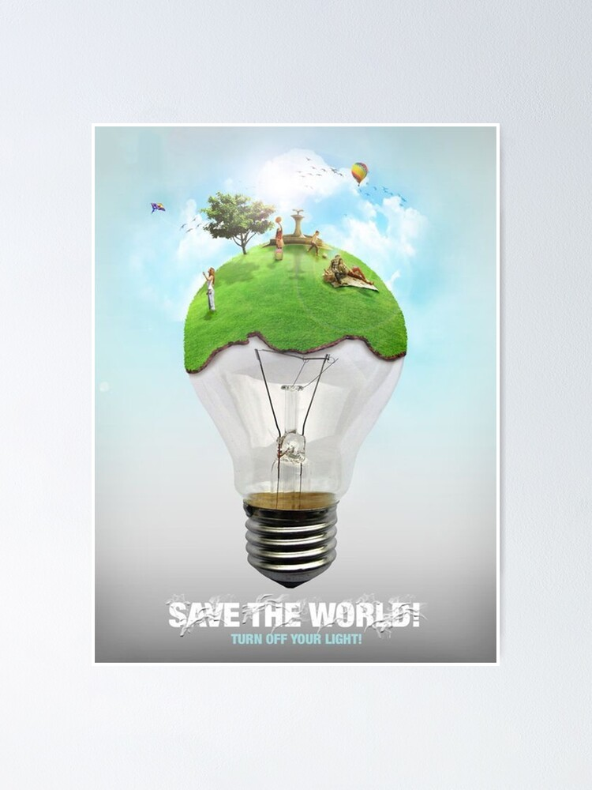

It really depends on the type of bulb and the cost of electricity. Whether you are using incandescent, flourescent, halogen, or LED, they each are very different from the other. With the exception of LED bulbs, they all have a nominal operating life that is affected by how many times they are turned on and off. LEDs are unaffected by turning them on and off.
However, with that being said, there are definitely some "do's" and "dont's" on deciding when to turn your lights off. Keep reading to find out more. Click the lamps to reveal more.

Types of Lights and Their Efficiency
Incandescent lights should be turned off whenever they are not needed, because they are the least efficient type of lighting. 90% of the energy they use is given off as heat, and only about 10% results in light. Turning lights off will also keep a room cooler, an extra benefit in the summer.
While halogens are more efficient than traditional incandescent bulbs, they use the same technology and are far less efficient than CFLs and LEDs. Therefore, it is best to turn these lights off whenever they are not needed.
The operating life of a light emitting diode (LED) is unaffected by turning it on and off. While lifetime is reduced for fluorescent lamps the more often they are switched on and off, there is no negative effect on LED lifetime. This characteristic gives LEDs several distinct advantages when it comes to operations. For example, LEDs have an advantage when used in conjunction with occupancy sensors or daylight sensors that rely on on-off operation. Also, in contrast to traditional technologies, LEDs turn on at full brightness almost instantly, with no delay. LEDs are also largely unaffected by vibration because they do not have filaments or glass enclosures.
The operating life of CFLs is more affected by the number of times they are switched on and off. You can generally extend the life of a CFL bulb more by switching it on and off less frequently than if you simply use it less.
In any case, the relatively higher "inrush" current required lasts for half a cycle, or 1/120th of a second. The amount of electricity consumed to supply the inrush current is equal to a few seconds or less of normal light operation. Turning off fluorescent lights for more than 5 seconds will save more energy than will be consumed in turning them back on again. Therefore, the real issue is the value of the electricity saved by turning the light off relative to the cost of changing a lightbulb. This in turn determines the shortest cost-effective period for turning off a fluorescent light.
The Takeaway?
Turning off the lights when you leave your home is a cost-effective way to reduce your wasted energy. You need to choose high-quality light bulbs to make your home more energy efficient. Moreover, it’s also helpful to know essential things such as those mentioned above to help keep your energy bills low, save money, and preserve the Earth.
Turning off the lights when you leave your room can help save energy. It can also help reduce carbon emission and other harmful greenhouse gases. Hence, turning off your lights is a simple way to help protect the environment and save the planet.
It is essential to follow the general rules of thumb when it comes to turning off your lights. If you use incandescent bulbs, it’s vital to turn off the lights if you go out of your room for one minute or more. For fluorescent bulbs, you can leave the lights on if you’re out of your home for 15 minutes or less, and turn them off when you leave for more than 15 minutes.
Turning off your lights will also help reduce the use of non-renewable resources that are harmful to the environment. You can turn off the lights during the day especially if you don’t need them. You can also turn off your appliances to help reduce your carbon footprint and help save the planet.